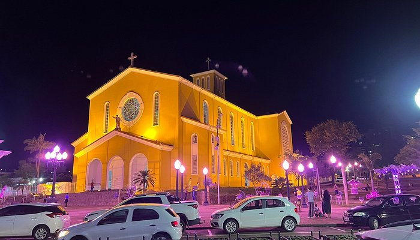
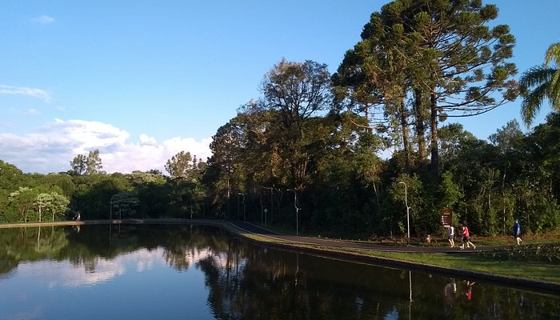
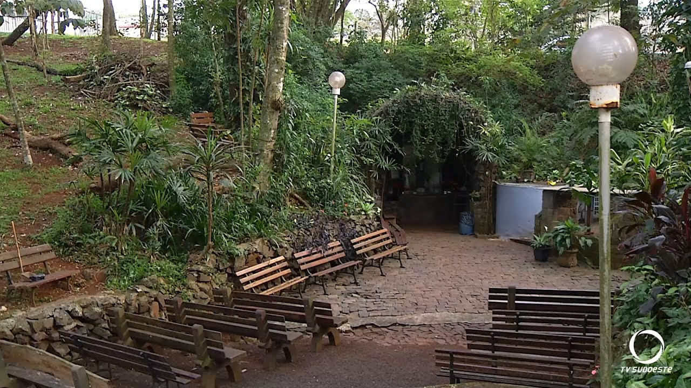

Pato Branco é conhecida nacionalmente como a Capital Tecnológica do Sudoeste do Paraná e um importante polo de inovação, tecnologia e agronegócio. Destaca-se pela alta qualidade de vida, sendo eleita uma das cidades mais inteligentes e desenvolvidas do Brasil, com destaque para educação, infraestrutura e tecnologia.
fatos sobre Pato Branco
- Fundação: 14 de dezembro de 1953
- População: Aproximadamente 97.821 habitantes
- Área: Cerca de 539 km²
- Economia: Baseada na indústria, comércio e agricultura
Lugares de Pato Branco


